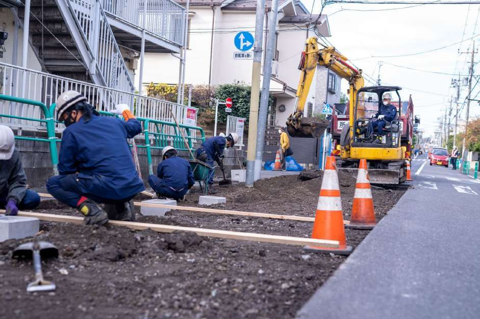
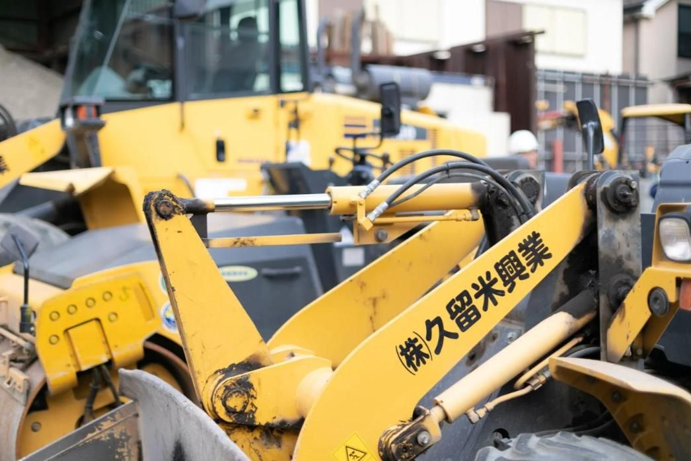
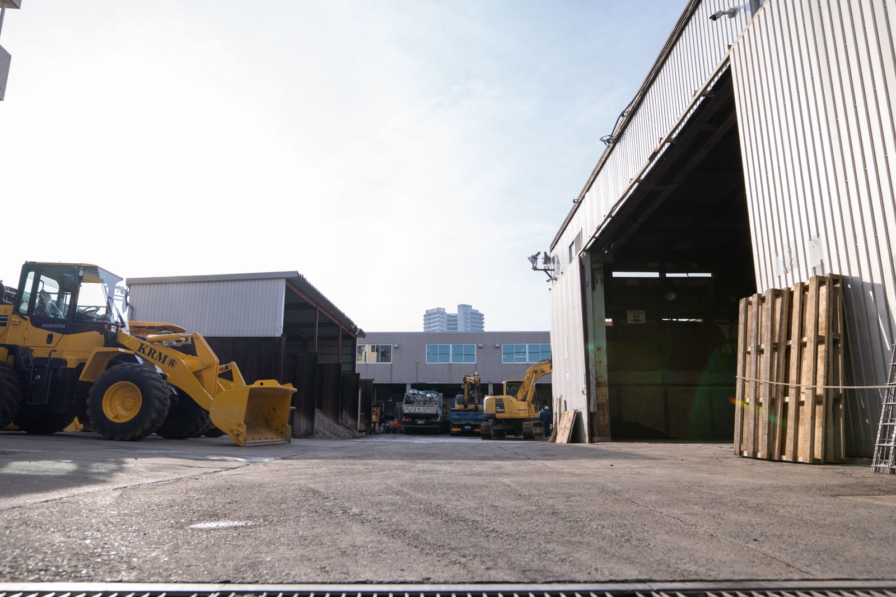
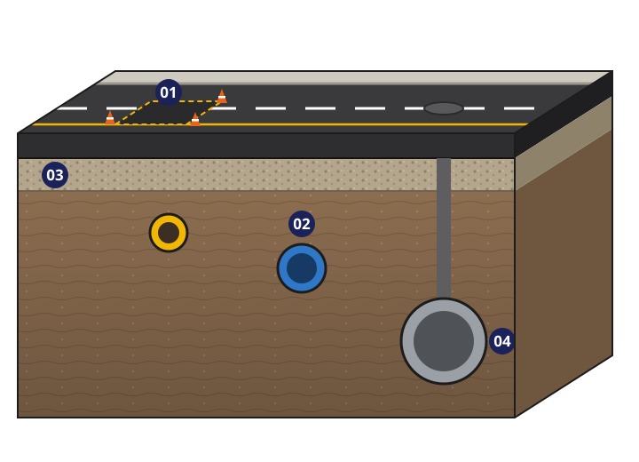
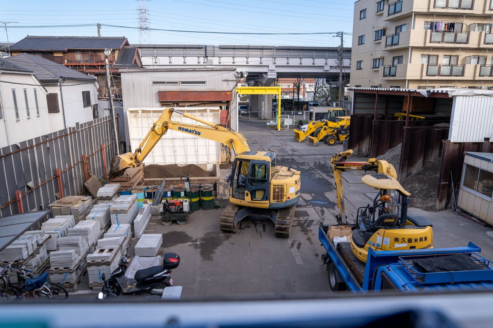
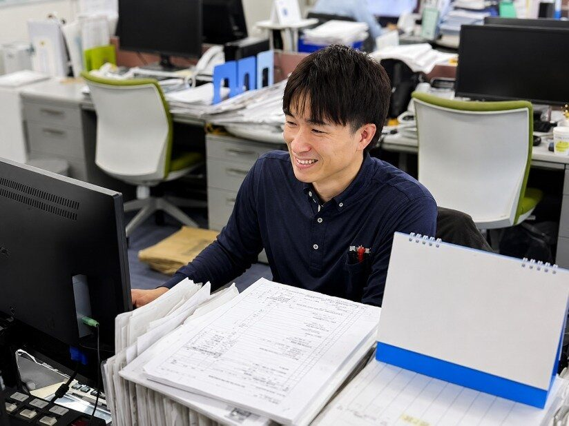
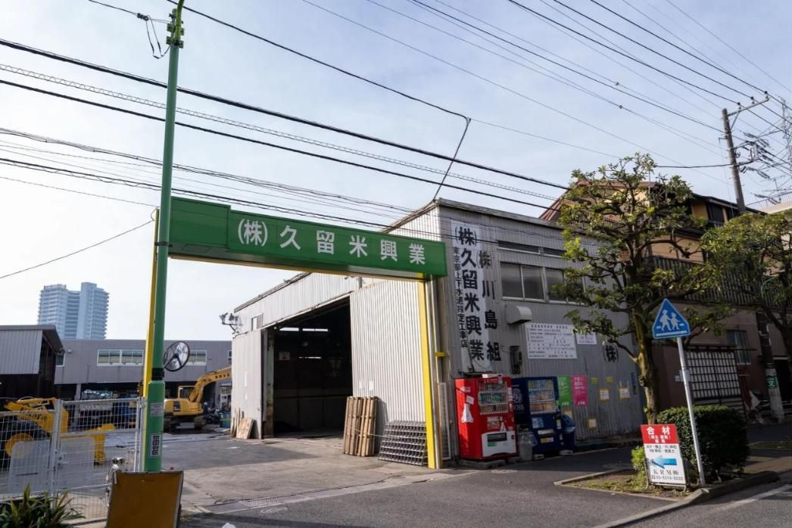

道路の上も、地面の下も。
世田谷を拠点に、1974年から。ガス管取替後の復旧舗装、水道・一般土木・下水道工事を担っています。




BUSINESS事業内容
道路の上と、地面の下の仕事。
ガス管取替後の道路復旧から、水道・土木・下水道工事まで。断面図の番号が、それぞれの事業の持ち場です。

インフラ工事暮らしの足元を、つくり直し、守る。


COORDINATION仕事の進め方
施工の先にある、信頼まで。
工事は、取引先・現場・協力会社・地域の方々との連携によって進みます。現場を円滑に進めるための関係づくりも大切にしています。
- STEP 01CLIENT
取引先・発注者
工事の内容や場所、時期などのご相談を受けて、仕事が始まります。
- STEP 02COORDINATION
営業・調整
現地の確認、見積、人や材料・日程の段取りを整え、現場とつなぎます。
- STEP 03CONSTRUCTION
現場・施工
安全を確かめながら班で役割を分け、近隣にも配慮して施工を進めます。
PROJECT HIGHLIGHTS施工実績
世田谷区内の道路維持・表層改良・道路築造など、確認できた施工の様子をご紹介します。


FACTS数字で見る久留米興業
- 設立
- 1974年
- 事業分野
- 4分野
- 職種
- 2職種
- 拠点
- 世田谷
1974年3月4日設立
復旧舗装・水道・一般土木・下水道
営業職・現場職
東京都世田谷区北烏山
 #RECRUIT採用情報営業職・現場職の仕事と募集条件
#RECRUIT採用情報営業職・現場職の仕事と募集条件

#ENVIRONMENT労働環境働く時間・休み・現場の1日
#PEOPLE働くメンバー現場と事務所、それぞれの役割
#COMPANY会社情報会社概要・沿革・アクセスCONTACTお問い合わせ
工事のご相談から、会社のことまで。